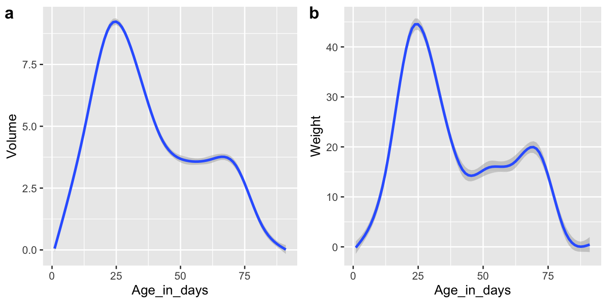

geom_histogram()geom_boxplot()cowplot packageggsave()Most of what we cover today will be based off of Chapter 3, sections 3.7 - 3.10 in the R4DS textbook.
Learn more about the features that the cowplot packages
has to offer here.
The links under the “articles” dropdown menu are particularly useful,
e.g. this article
on aligning plots.
Read about ggsave() here.
The linked page also contains information about how different file
extensions relate to image quality.
Here are some third-party packages that you may find fun to test out to style your own ggplots:
wesanderson
color palettesRcolorBrewer
palettesLaCroixColoR
color palettes
install.packages("devtools")
devtools::install_github("johannesbjork/LaCroixColoR")The homework exercises for this week are below. Use the same data as last week when working through the exercises.
Recreate the R code necessary to generate the following graphs as output using the cowplot package, and specifically plot_grid().

Create a bar plot showing the median cloudbuddy volume for each phase.
How are the following two plots different? Which aesthetic, color or fill, is more useful for changing the color of bars?
ggplot(cb_data,
aes(x = Observer)) +
geom_bar(color = "purple")
ggplot(cb_data,
aes(x = Observer)) +
geom_bar(fill = "purple")Recreate the R code necessary to generate the following plot:
What happens if you create a bar plot using
geom_bar() and map x (and no other aesthetic)
to a continuous variable? Think about why the plot looks the way it does
and how it relates to the default behavior of
geom_bar().
Sometimes when creating plots, the axis labels do not quite fit
and there is overlap making the text hard to read. There are a few
different ways to fix this. Check out this
link on how to rotate axis labels and recreate the code to make the
plot below. What are the hjust and vjust
options used for?
Another option is to change the font size of the axis labels,
described here.
Use the plot you just created, but without rotated axis labels. Save the
plot using ggsave() and set height = 3 and
width = 4 and adjust the axis label font size until there
is no longer any overlap.
Pick one of the plots we have created so far and save it (using
ggsave()) as both a pdf and tiff file (keeping the other
settings as default). How does the file size compare between these
exported plots? Open the files in an app that lets you zoom and zoom in
as much as you can. What do you see? Why is there such a difference
between different types of image files (check the resources to find the
answer)?
Read chapter 3.9 in the R4DS text book and see if you can create a so called Coxcomb chart (which looks a bit like a pie chart; something we will learn about how to make later) like the one below.
What does geom_jitter() do? How does it compare to
geom_point()? Create two plots, one using
geom_jitter() and one using geom_point() (with
for example x = Age_in_days and y = Volume)
and put them next to each other using plot_grid() from the
cowplot package. Are there differences between the plots?
Try setting height = 1 in geom_jitter() and
explain what happens.
Combine multiple skills that you’ve learned so far (and perhaps a few new things) to recreate the figure below. When setting the histogram colors, remember the name of the aesthetic we use in this case. Read the cowplot documentation to figure out how to combine a plot with facets and plots without.
Use the cloudbuddy data and ggplot2 to create something you think looks cool. This you could do by styling one of the plots you have already made, finding a combination of different geoms that look good together, layering geoms in a visually pleasing way, or maybe you want to try using one of the many geoms we have not talked about. You can even combine multiple plots using the cowplot package. What you create doesn’t have to be an informative data visualization, it is more important that you try something new. Find inspiration among the resources listed here on the class website or search the web. Share your creation with the group by posting both the plot (saved as a file) and the code (in a script containing the code for this plot only) in the r4dss24 Slack channel no later than by the end of the day Tuesday August 20th.